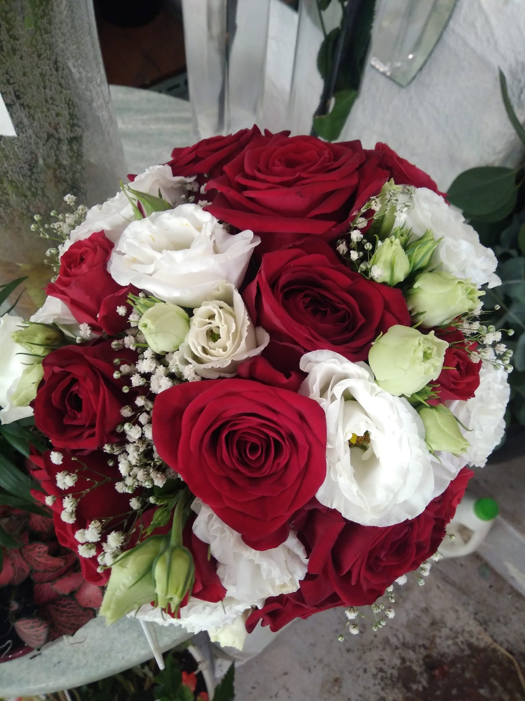
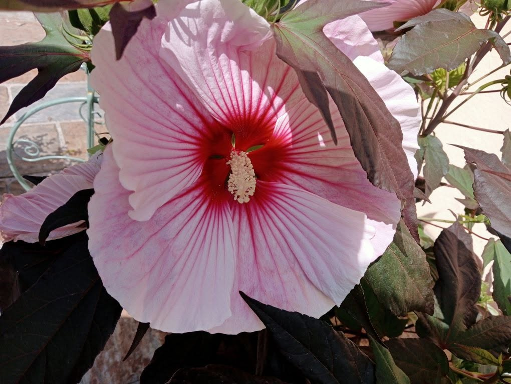
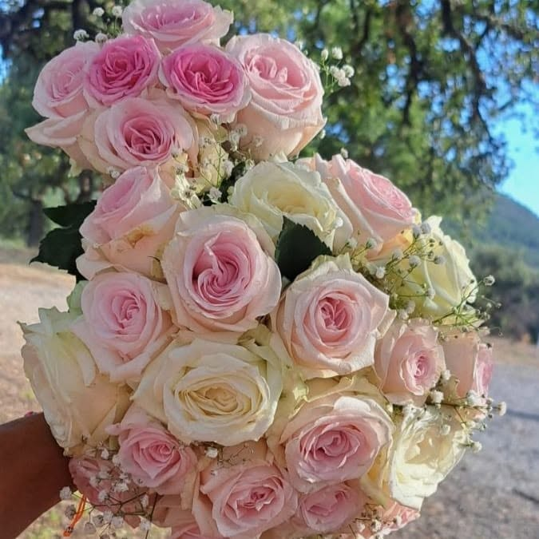
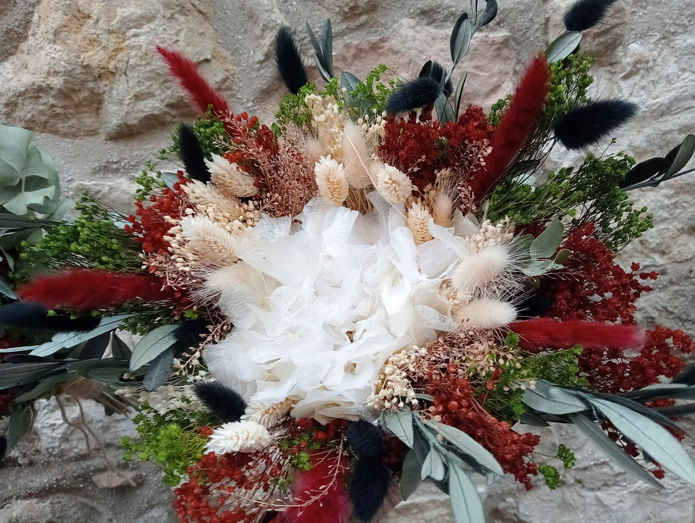
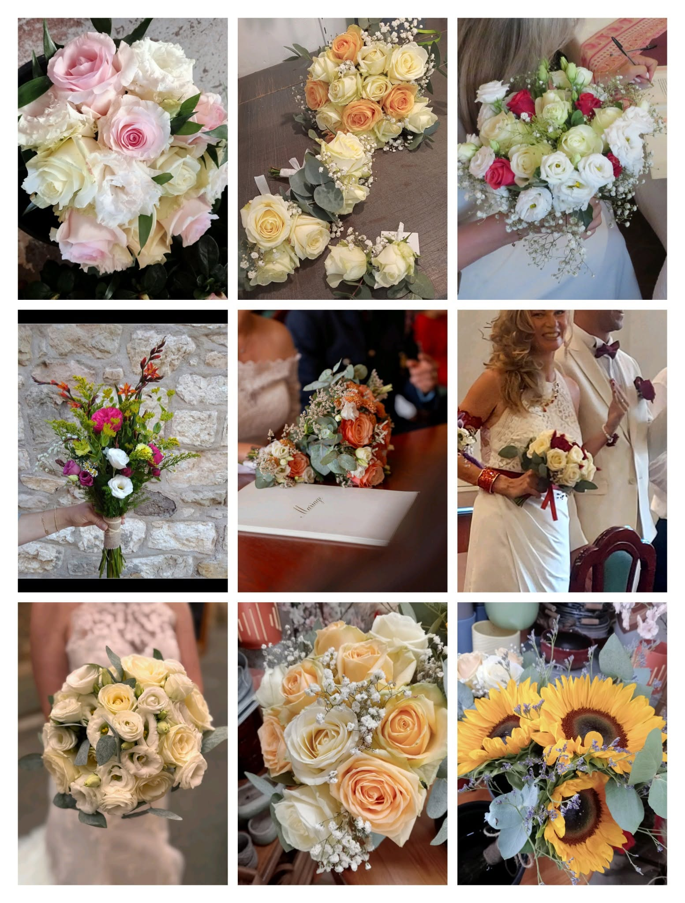
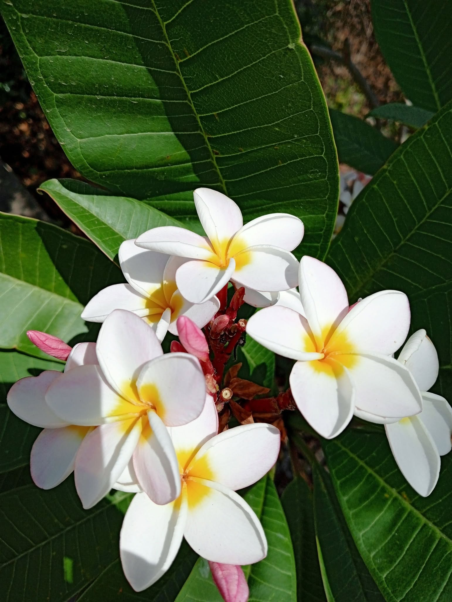
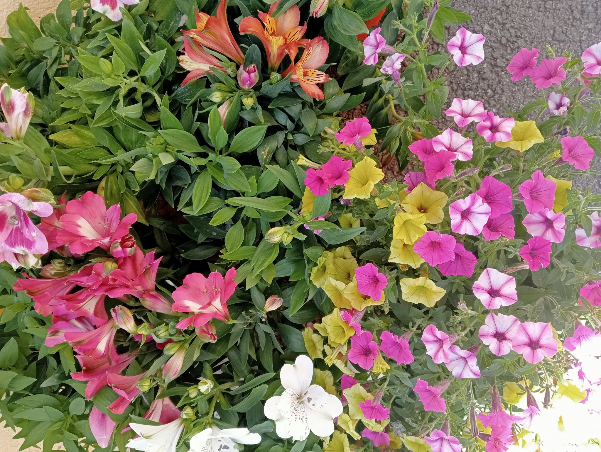

Le Passionné
Composition : roses rouges veloutées, lisianthus blancs et verts, gypsophile (souffle de bébé).
L'élégance intemporelle du rouge et blanc, parfait pour déclarer sa flamme ou un mariage romantique.
Artisan fleuriste depuis 2010
Muriel compose pour vous des bouquets uniques,
au cœur du village de Saint-Cézaire-sur-Siagne.
La boutique
Installée au cœur du charmant village de Saint-Cézaire-sur-Siagne, Muriel vous accueille dans sa boutique Fleurs de Siagne depuis 2010. Chaque bouquet est composé à la main, avec des fleurs fraîches choisies avec soin : mariages, anniversaires, deuils ou simplement pour le plaisir d'offrir.

Nos créations
Chaque création marie fleurs de saison, feuillages de Provence et une touche de poésie.

Composition : roses rouges veloutées, lisianthus blancs et verts, gypsophile (souffle de bébé).
L'élégance intemporelle du rouge et blanc, parfait pour déclarer sa flamme ou un mariage romantique.

Composition : roses roses pastel, roses blanches crème, nuage de gypsophile.
Un camaïeu doux et délicat, idéal pour un baptême, une naissance ou un bouquet de mariée bohème.

Composition : hortensia stabilisé, lagurus (queues de lapin), broom, feuillage d'olivier et eucalyptus.
Un bouquet éternel aux couleurs de la Provence, qui ne demande aucun entretien.

Composition : roses crème, pêche et blanches, lisianthus, gypsophile, eucalyptus… et même tournesols !
Bouquets de mariée, boutonnières et décoration complète : Muriel accompagne votre plus beau jour.

Composition : frangipanier (plumeria), hibiscus géants et plantes fleuries de caractère.
Une touche d'ailleurs pour parfumer et illuminer votre intérieur comme votre jardin.

Composition : alstroemerias (lys des Incas), pétunias multicolores et plantes de saison.
Des potées généreuses et colorées pour balcons, terrasses et jardinières provençales.
Ils nous font confiance
Une sélection d'avis publiés sur Google Maps ⭐
★★★★★« Un immense merci pour ton magnifique travail. Les fleurs et la décoration florale de notre mariage étaient absolument superbes. Chaque détail était parfaitement pensé : tes compositions ont apporté une touche d'élégance et de poésie qui a enchanté nos invités. »
★★★★★« Au centre du village, beaucoup de goût, toujours serviable. »
★★★★★« J'adore les plantes, et à chaque fois que j'entre chez la fleuriste il y a toujours une plante qui me prend l'œil. Celles que j'ai achetées poussent parfaitement, je les adore ! »
★★★★★« Très très bien. Bouquet impeccable et prix correct. »
Commande & devis
Décrivez votre envie, Muriel vous répond rapidement par email ou téléphone.
Contact
| Lundi | Fermé |
| Mardi | 9h – 12h · 16h – 19h |
| Mercredi | 9h – 12h · 16h – 19h |
| Jeudi | 9h – 12h · 16h – 18h |
| Vendredi | 9h – 12h · 16h – 19h |
| Samedi | 9h – 12h · 16h – 19h |
| Dimanche | 9h – 12h |
Livraison dans la journée & en moins de 4h
Nous trouver